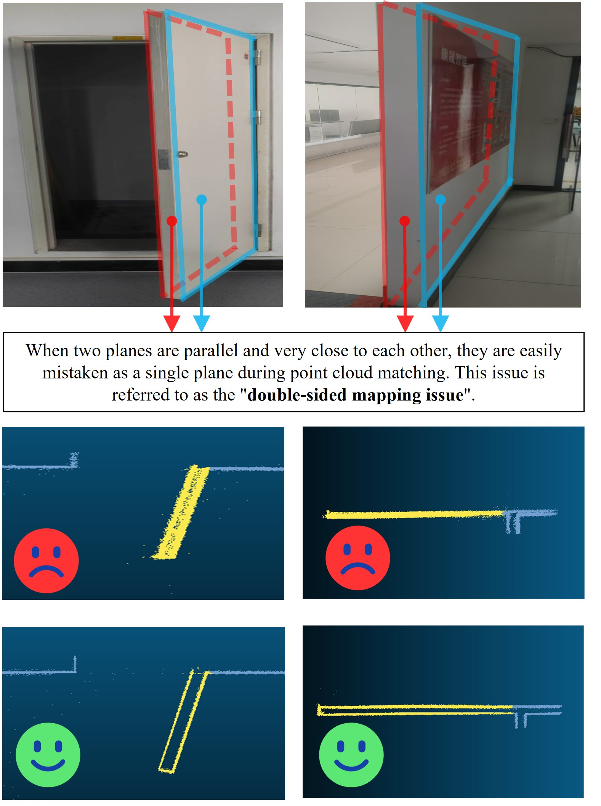
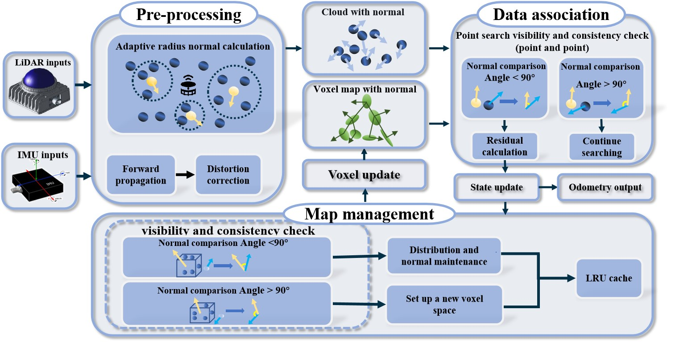
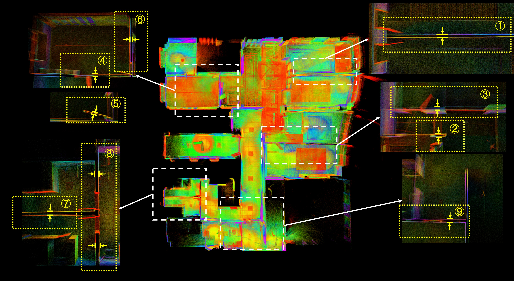

Preserve the geometry that a map would otherwise merge
Normal-aware mapping separates nearby opposing surfaces that conventional associations can merge. I contributed to the algorithms, code, experiments, analysis, and manuscript in this collaborative project.
Original paper · Figure 6. The simulation comparison makes the geometry of opposing surfaces visible.
The problem: nearby surfaces are not the same surface
Thin walls and doors can put opposing surfaces close together. Associating points by proximity alone can merge those surfaces and introduce incorrect geometric constraints. II-NVM uses surface-normal consistency to preserve the distinction.

Original paper · Figure 1. A real indoor example shows why preserving the two sides of a surface matters.
Connect normal estimation, association, and map updates
The method combines distance-adaptive normal estimation, voxel storage for opposing surfaces, and normal-aware correspondence checks. LRU management supports incremental map updates.

Original paper · Figure 2. Geometric consistency is carried through the mapping pipeline.
Evaluate the trajectory and the reconstructed structure
The paper evaluates simulated trajectories against ground truth and assesses real indoor structure through wall-thickness recovery. Selected Livox results below report absolute trajectory error in meters; lower is better.
Selected simulation sequences · original paper, Table II
Livox sequence
II-NVM
CT-LIO
FAST-LIO2
Wall_5cm_a
0.0163
0.1669
0.0364
Garage_c
0.0133
0.0515
0.1674

Original paper · Figure 7. Numbered regions connect the reconstructed map to structural measurements.
My contribution within the collaboration
As a coauthor, I contributed to algorithm development, code implementation, simulation and real-world experiments, result analysis, and manuscript writing.
I worked with Chengwei Zhao, Yixuan Li, Jie Xu, Linji Wang, Yongxin Ma, and Xinglai Jin. The paper and public repository document the team’s system and evaluation.
Why this remains part of my research
This project shaped my interest in representations that preserve a distinction when it matters downstream. Two nearby surfaces may look interchangeable to a distance-based association rule, but treating them as one changes the map.
My current manipulation work asks a related question at the task level: which spatial or functional distinction must a robot retain to select its next action? I want to connect geometric structure with beliefs that can be checked and revised through execution.
Outcomes
Published collaborative work in IEEE Robotics and Automation Letters, with an IROS 2025 oral presentation.
Public implementation, dataset access, paper, and video demonstration.
A robot can recognize a scene and still lack the evidence needed for its next action. I built a benchmark and diagnostic reference pipeline that connect view selection to the current manipulation command.
A symmetry-aware VLA framework that combines action generation, predicted consequences, and adaptive interaction. My interest is in policies that can respond when physical observations disagree with an expected trajectory.